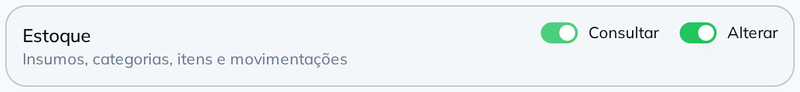
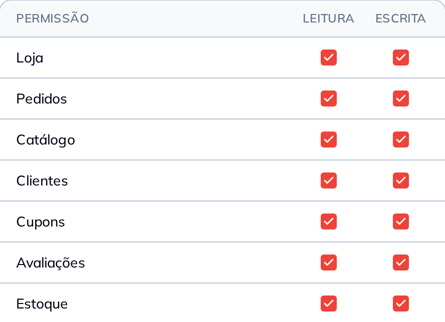

<!-- Slide 5: a primeira das duas CAPTURAS que fecham a peça. Depois de quatro
     desenhos, as duas últimas páginas são as únicas que o leitor pode conferir
     no painel dele — a peça abre no que a IA responde e fecha no que ele vai
     clicar.

     SÃO DOIS RECORTES PORQUE SÃO DUAS PORTAS. O slide afirma que a chave existe
     nas duas, então ele mostra as duas: a linha Estoque do formulário de
     credencial (Aplicativos → API Aberta, com Consultar e Alterar escritos ao
     lado de cada chave) e a linha Estoque da tabela de autorização do MCP (com
     LEITURA e ESCRITA marcadas).

     A SEGUNDA SÓ EXISTE DENTRO DO FLUXO DE AUTORIZAÇÃO — não há rota no painel
     que abra aquela tela —, então ela é capturada no meio do caminho, pelo
     `--retrato` do `consultar-estoque.py`. É a técnica que a #13 inventou, e
     aqui ela serve para fotografar exatamente a linha que a #13 e a #14 TIVERAM
     DE DEIXAR DE FORA: nas duas, Estoque aparecia apagado, com a etiqueta
     "Em breve", e as duas fecharam o quadro em Avaliações de propósito.

     OS DOIS RECORTES SÃO FAIXA CONTÍNUA da tela de origem, nunca montagem. O da
     autorização começa no cabeçalho (PERMISSÃO | LEITURA | ESCRITA), porque sem
     ele os dois tiques não têm nome, e fecha no fio que separa a linha do
     Estoque da seguinte.

     O CORPO TEM UMA LINHA SÓ por aritmética: os dois recortes somam 626 px de
     altura e é o que sobra na página depois do título. Nesta página quem
     argumenta são os prints. -->
<div class="slide slide--suave">
  <div class="topo">
    <span class="logo"></span>
    <span class="contador">5 de 6</span>
  </div>

  <div class="pilha g24" style="margin-top: 22px; max-width: 904px">
    <span class="chapeu">A chave é sua</span>
    <h2 class="titulo titulo--pequeno">
      O Estoque é uma chave que <span class="destaque">você</span> liga
    </h2>
    <p class="corpo">
      Nas duas portas, e separada: consultar é uma permissão, alterar é outra.
    </p>
  </div>

  <!-- AS DUAS LARGURAS SÃO DIFERENTES, e isso é cálculo, não descuido. O que o
       olho compara aqui é o TAMANHO DA LETRA dos dois prints, e ele sai da
       conta `largura exibida ÷ largura capturada em px de CSS`: o cartão da
       credencial tem 605 px de CSS e a tabela de autorização tem 444. Nos dois
       a 840 px, o primeiro chegava a 1,39× e o segundo a 1,89× — a mesma
       palavra, "Estoque", saindo com dois tamanhos na mesma página. A 904 e
       720 as escalas ficam em 1,49× e 1,62×, que o olho lê como iguais.

       E a largura diferente ainda faz um favor: duas faixas de mesma largura
       leem como duas partes de UMA tela, e estas são duas telas. -->
  <div class="pilha centro" style="margin: 28px auto 0; width: 904px; gap: 22px">
    <div class="recorte" style="width: 904px">
      
    </div>
    <div class="recorte" style="width: 720px">
      
    </div>
  </div>

  <div class="empurra"></div>

  <div class="rodape">
    <span class="pontos"><span></span><span></span><span></span><span></span><span class="on"></span><span></span></span>
    <span class="arraste">arraste</span>
  </div>
</div>
